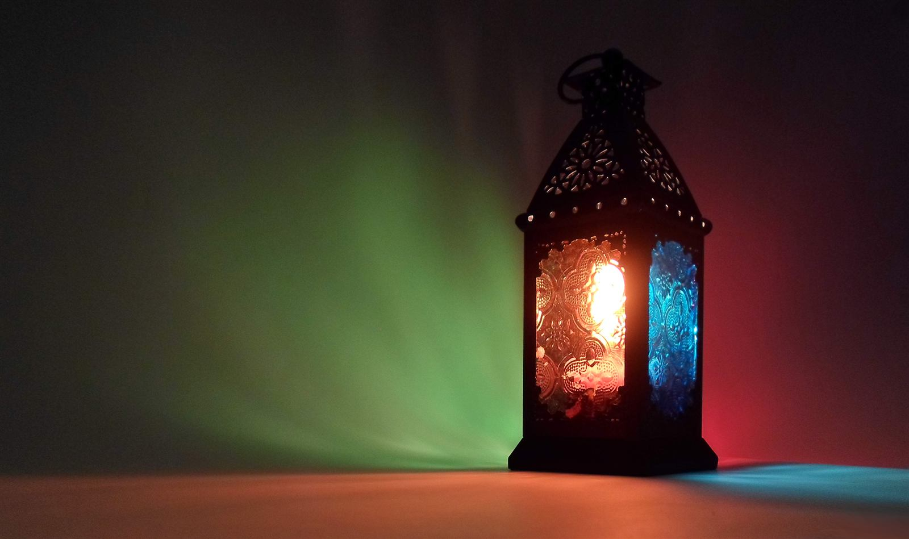
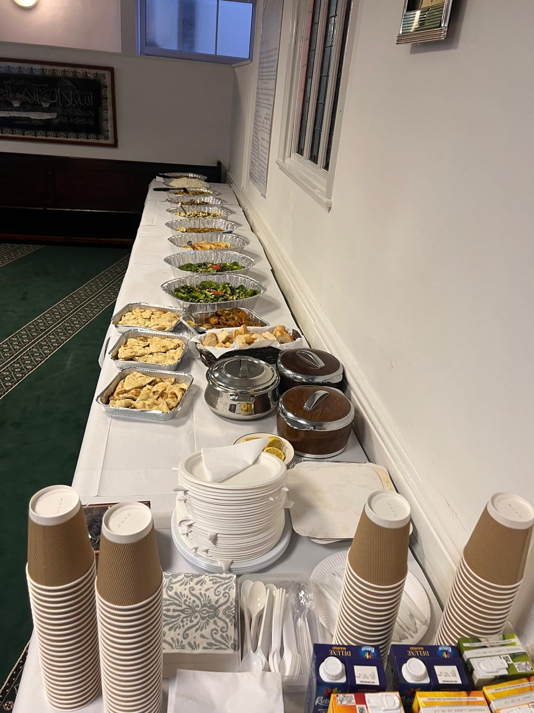
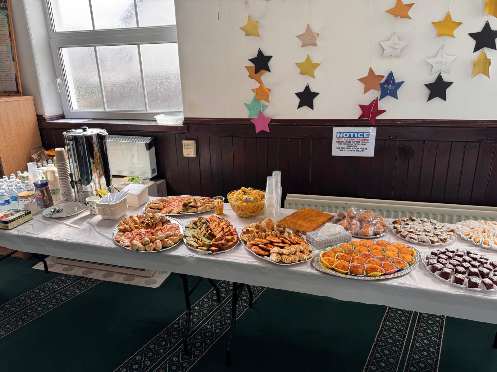

Ramadan at Canolfan Iman Centre
Fasting, Taraweeh, community iftars, and giving — Ramadan is the heart of our community calendar in North Wales.

Photo: Ibrahim.ID, CC BY-SA 3.0Taraweeh & Suhoor / Iftar Times
For today's Iftar and Taraweeh times, see our Prayer Times page or contact Imam Mohamed.

Breaking Our Fast Together
Throughout Ramadan we aim to host community iftars where the whole neighbourhood — Muslim and non-Muslim alike — is welcome to join us in breaking the fast.
Dates and details are confirmed closer to the start of Ramadan each year — check back here or contact us nearer the time to find out how to join or sponsor an iftar.

Give Your Zakat & Sadaqah This Ramadan
Zakat
Fulfil your obligatory Zakat and support those in genuine need in our community and beyond.
Sadaqah
Every gift, large or small, helps keep our doors open and our programmes running year-round.
Make This Ramadan Count
Your donation supports Taraweeh, iftars, and families across North Wales who need our help.
Donate for Ramadan